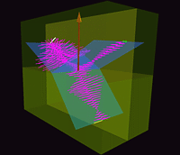
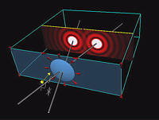

QuickTime movies from various TOP modules
Note: Click on the thumbnails to go to that particular module's movies page.
 Wave Simulation |
 Reflection/Refraction |
|
Geometrical Optics |
 Polarization |
 Interference (Michelson Interferometer) |
 Interference (Fabry-Perot Etalon) |
 Fresnel Diffraction (Single Slit) |
Fresnel Diffraction (Circular aperture) |
|
 Fraunhofer Diffraction |

Created by
Srihari Angaluri
and Kiril Vidimce
Send comments to comments@webtop.org